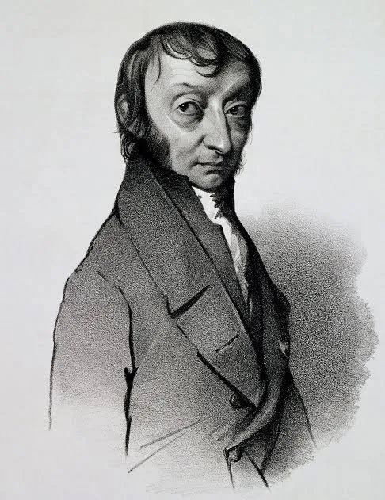
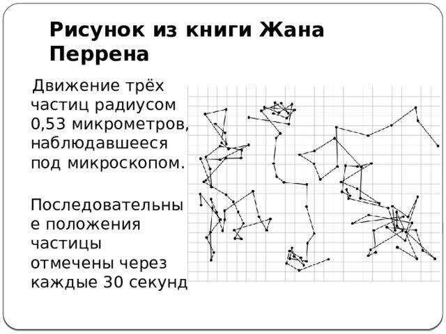
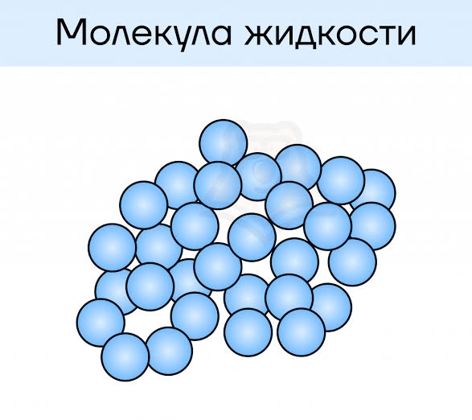

Автор: Амедео Авогадро и Жан Перрен
«Число молекул в любом газе всегда пропорционально его объему при одинаковых условиях температуры и давления».
Амедео Авогадро (1811 г.) - итальянский физик и химик, выдвинувший фундаментальную гипотезу: в равных объемах любых газов при одинаковых температуре и давлении содержится строго одинаковое число молекул.
Жан Батист Перрен (1908 г.) - французский ученый, который экспериментально проверил закон на броуновских частицах и впервые вычислил точное число молекул в одном моле, получив Нобелевскую премию по физике (1926 г.).

IMG_7354.webpСуть опыта: седиментационное равновесие
Перрен приготовил водную эмульсию смолы гуммигута с одинаковыми микросферами известного радиуса и массы. Раствор поместили в прозрачную кювету глубиной 100 мкм.
- Оседание: Сила тяжести тянет частицы вниз, стремясь собрать их на дне.
- Тепловое рассеяние: Бесчисленные молекулы воды непрерывно ударяют частицы, подбрасывая их вверх.
- Микроскоп: Измерялась концентрация частиц на разных высотах при установившемся динамическом равновесии.

IMG_7353.jpegРезультат: экспериментальное число Авогадро

IMG_7350.jpegФормула: масса одной молекулы
В чем логика: как взвесить то, что нельзя положить на весы?
Положить одну молекулу на весы невозможно из-за её ничтожной массы (порядка 10−26 кг). Но на обычных весах легко взвесить 1 моль вещества - например, ровно 18 граммов (0,018 кг) воды.
Опыт Перрена дал независимый способ точно сосчитать, сколько именно частиц содержится в этом макроскопическом объеме (NA ≈ 6,022 × 1023 штук).
Разделив общую массу известной порции на точное число молекул в ней, получают массу одной молекулы: m₀ = M / NA.
Итог: Физикам не понадобились весы для отдельной молекулы. Связующим мостом между макроскопическим килограммом и микромиром стало число Авогадро.
Давление, температура и закон Авогадро
При одинаковых V, P и T число молекул строго одинаково вне зависимости от типа газа. Скорость же зависит от массы: легкий водород движется быстрее тяжелого углекислого газа.